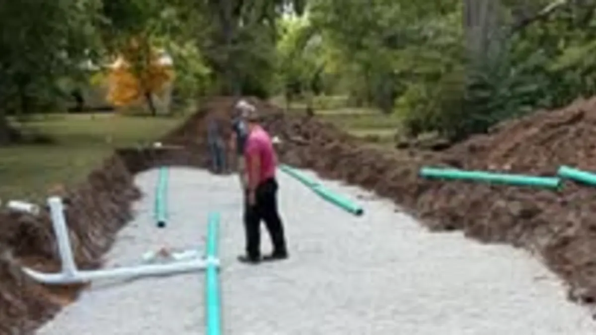

Septic Service Overview
New system installation, how the whole process works, and what a septic system is doing underground.
Failing drain fields, cracked or collapsed tanks, broken distribution boxes and crushed lines. We diagnose what actually failed before anybody starts quoting a replacement.
A failed septic system cannot wait. Call Mike directly at 785-488-7925 any time, day or night.
Call 785-488-7925 Now
A septic system is four or five separate things that can fail independently: the tank, the baffles, the distribution box, the lateral lines and the drain field. Each one fails differently and each one costs differently to fix. The most expensive mistake in septic work is replacing a whole system because one component failed. The second most expensive is repairing a component when the field is already gone. Telling those apart is the job.
Request a QuoteA failing drain field is the big one. Signs are wet or soggy ground above the field, grass that is noticeably greener and faster-growing in that one area, sewage odor outdoors, and a tank that pumps down and refills almost immediately. Fields fail from age, from solids carrying over out of a tank that was never pumped, from compaction where vehicles have driven over them, and from being undersized for the load the house actually puts on them.
Tanks crack, and concrete tanks on older systems can deteriorate at the baffle and the outlet. A collapsed or cracked tank shows up as ground settling near the tank, or as a tank that will not hold level. This is also one of the few genuine safety issues on a septic system, and it is not something to walk around on.
Distribution boxes shift and break, which sends everything to one lateral line instead of spreading it across the field. That overloads part of the field while the rest sits unused, and it looks exactly like whole-field failure until somebody opens the box. Lateral lines crush under traffic and root over, and a single crushed run can often be replaced without touching the rest.
The honest answer depends on what failed and on the age of the system. A broken distribution box on an otherwise sound twelve-year-old system is a repair. A drain field that has been taking solids for fifteen years because the tank was never pumped is usually a replacement, and a repair there is money spent twice.
What we will not do is quote a full system replacement without looking at the components. We pump the tank, open what needs opening, and find out which part actually failed. If it is a repair, you get a repair. If the field is genuinely finished, we will tell you that plainly and explain what a replacement involves, including the county permitting side of it.
Age is the honest rule of thumb: if a system is over about twenty-five years old and the drain field is failing, plan for replacement rather than hoping for a repair. If it is newer than that and failing, something specific went wrong and it is worth finding out what.
Repair work from Mike's Services LLC includes:
Mike's Services LLC provides septic system repair services throughout Central Kansas including Salina, Tescott, Bennington, Minneapolis, Lincoln, Ellsworth, and Abilene. We serve property owners across Saline County, Ottawa County, Lincoln County, Dickinson County, Ellsworth County, and Cloud County. Not sure if we cover your location? Call us. We may be able to help even in areas not listed here.
Common questions from Central Kansas property owners.
It depends on why it failed. A field overloaded by a broken distribution box, or one section crushed by vehicle traffic, is often repairable. A field that has been absorbing solids for years because the tank was never pumped is usually past repair. We find out which before quoting.
Sewage odors inside or outside, slow drains throughout the house, wet or soggy ground above the drain field, grass growing noticeably faster in one area, and backups in the lowest drains in the house. A tank that refills immediately after being pumped is a strong drain field signal.
Not automatically, but plan for it. If a system that age is showing drain field symptoms, replacement is usually the honest answer. If it is that old and showing no symptoms, an inspection is worth doing before a problem picks the timing for you.
Some do and some do not, and the threshold varies by county and can change. Kansas onsite wastewater is regulated through KDHE and administered by county health departments. We coordinate with your county on work that requires it. For a definitive answer on your property, call your county health department directly.
For an active backup or a failed system, call 785-488-7925 and we will tell you honestly when we can be there. The 24/7 number is for exactly this, and you reach Mike rather than an answering service.
Most people call about one of these and turn out to need another. Here is the whole list.
New system installation, how the whole process works, and what a septic system is doing underground.
Routine tank pump-outs and clean-outs. If you cannot remember the last one, it is due.
Sewer line backups, lateral lines, yard drains and drain tile. 24/7 for the emergencies.
Buying or selling a rural property, or confirming a system is sound before you spend money on it.
Soil percolation testing and site evaluation, the step that decides what system the ground will take.
📄 From the Blog: When Spring Storms Roll Through Kansas, Cleanup Begins. Read the full guide.
📄 From the Blog: Septic vs Lagoon vs Grinder Pump: Saline County KS Guide. Read the full guide.
Back to Septic Service in Salina & Saline County, or see everything Mike's Services LLC does.
Call us or submit a quote request and we will get back to you quickly with honest answers and a clear price.